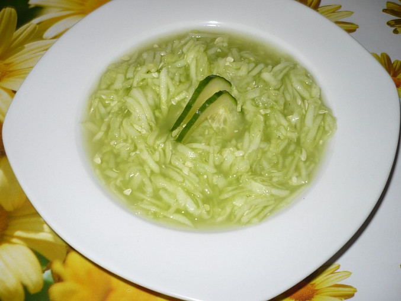

Prosím pro Mayu udělat bez cukru !!
Jednoduchý a osvěžující okurkový salát s jemným nálevem z octa a cukru.
Okurku oloupeme, nastrouháme nahrubo a osolíme.
V misce rozmícháme vodu, ocet a cukr. Nálev nalijeme na okurku a promícháme.
Opepříme podle chuti, pokapeme olejem a případně přidáme nakrájenou cibuli.